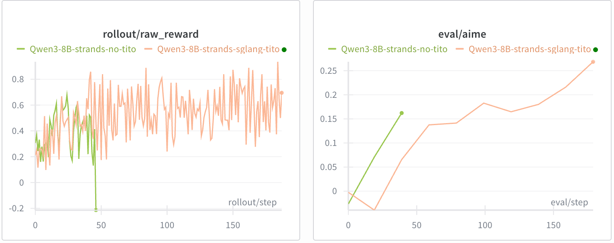
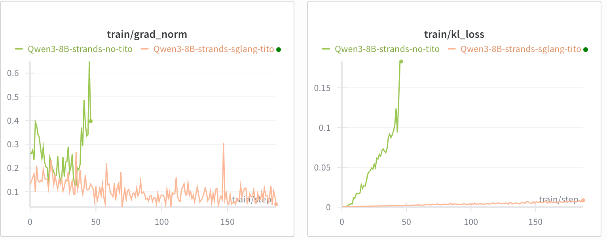

| Component | Agent scaffold / loop | Token-in/token-out |
|---|---|---|
| Strands-Agents | ✓ | ✗ (text-based) |
| SGLang | ✗ | ✓ |
| Strands-SGLang | ✓ | ✓ |
Existing agent scaffolds like Strands-Agents [1] make it easy to serve tool-using agents, but face a key challenge: they operate on text (usually an OpenAI-compatible endpoint) while RL training requires exact token IDs (token-in, token-out). This mismatch causes retokenization drift [2] — the tokens used for computing logprobs and gradients no longer match the tokens that were actually generated — leading to effectively off-policy updates and unstable RL training. Strands-SGLang bridges this gap by extending Strands-Agents with SGLang's native endpoint [3] while preserving the customizable agent loop.
The challenge
Most agent scaffolds provide an agent loop (tool orchestration, iteration control, tracing), but their model interface is typically text-based. For RL training, text alone is insufficient: the training pipeline must consume the exact token-level trajectory produced by the backend.
If token IDs are reconstructed later by retokenizing the rendered text messages, retokenization drift can occur, making updates effectively off-policy and potentially destabilizing RL training.
Strands-SGLang addresses this by bridging both worlds:
- ✓ Strands for the customizable agent scaffold / loop
- ✓ SGLang native generation for end-to-end token-in/token-out rollouts
So you can keep the same agent loop for serving while producing training-ready trajectories by construction.
Optional read: Differences between agent serving and training
Agent serving and agent training look similar on the surface (both run an agent loop that calls tools and produces answers), but they optimize for different aspects and failure modes.
| Aspect | Agent Servicing (production) | Agent Training (RL / post-training) |
|---|---|---|
| Response I/O | Text messages | Token IDs |
| Tool Parsing | Lenient (with post-processing fallbacks) | Strict (respects true policy distribution) |
| Client | Optimized for reliability + UX | Optimized for high-throughput rollouts |
| Streaming | Optional (for UX) | No (reducing client overhead) |
The bridge
Strands-SGLang implements a new model class SGLangModel backed by SGLang’s native /generate endpoint, so you can reuse Strands’ agent loop while exposing RL-relevant internals:
- Token-in/token-out rollouts (token IDs + logprobs/masks): no retokenization drift
- Strict, on-policy tool-call parsing: no heuristic repair or post-processing; tool calls are parsed exactly as emitted by the model
- Native SGLang API: high-throughput, non-streaming rollouts
Other details
- Iteration limiting hook to cap tool loops cleanly
- Rollout-friendly client defaults aligned with Slime
Example
You run a normal Strands agent — but now you can directly read token-level artifacts from the model:
from transformers import AutoTokenizer
from strands import Agent
from strands_tools import calculator
from strands_sglang import SGLangModel
# Suppose Qwen3-8B is served at http://localhost:30000
agent = Agent(
model=SGLangModel(
tokenizer=AutoTokenizer.from_pretrained("Qwen/Qwen3-8B"),
base_url="http://localhost:30000"),
tools=[calculator],
)
result = await agent.invoke_async("What is (25 * 17)^3 ?")
tm = model.token_manager
print("token_ids:", tm.token_ids)
print("loss_mask:", tm.loss_mask)
print("logprobs:", tm.logprobs)
The key insight: the rollout is already in the form that RL training wants — no ad-hoc agent loop code required.
Experiments
We demonstrate the impact of maintaining token-in/token-out (TITO) using a math reasoning agent (with a Python execution tool) with a Qwen3-8B (thinking) backend.
Implementations
- TITO implementation: slime/examples/strands_sglang
- Non-TITO implementation: replacing
SGLangModelwithOpenAIModeland applying retokenization
Results
Without TITO, training collapsed before step 50 despite a similar initial reward increase.


References
- [1] Strands Agents SDK. github.com/strands-agents/sdk-python
- [2] No More Retokenization Drift: Returning Token IDs via the OpenAI Compatible API Matters in Agent RL. vLLM blog, 2025.
- [3] SGLang documentation. docs.sglang.io
- [4] Slime: LLM post-training framework for RL scaling. github.com/THUDM/slime